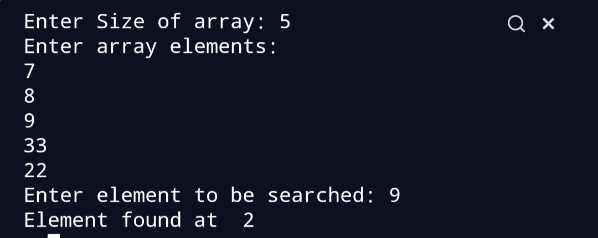

Linear Search Algorithm.
To write a program for Linear search.
To get a understanding about linear search.
Linear Search is one of the easiest searching algorithm. The main aim of a searching algorithm is to search for a desired element in the whole array. Linear Search sequentially searches for an element in an array.
In Linear Search, we start from the 0th index of the array, we compare each element with the key (desired element).
If the key is same as the element of array ,we return the index of that element.
If the key does not match any element then ,we return -1.
We need to search 6 in the array.
|1|5|2|0|6|8|
|______________ is a[0]==6 no then we move to next element.
|_____________is a[1]==6 no then we move to next element.
|___________is a[2]==6 no we move to next element.
|________is a[3]==6 no we move to next element.
|_____is a[4]==6 yes ,thus we return 4.